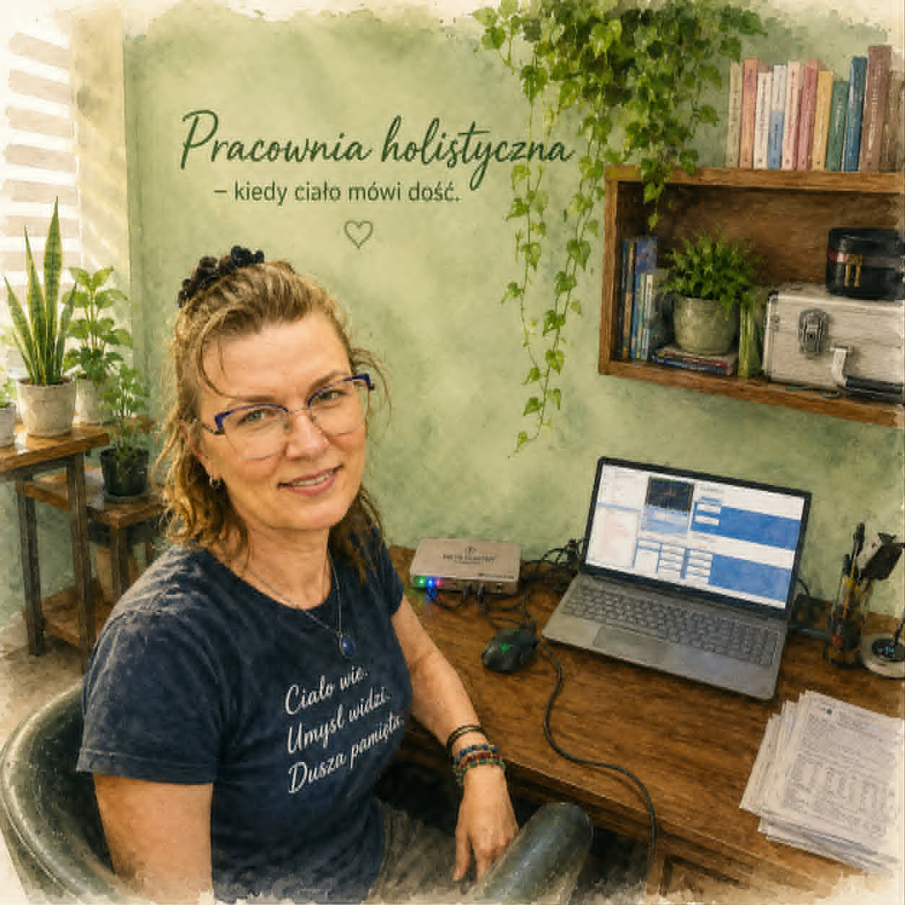

O mnie
Wierzę, że organizm nie działa przeciwko nam.
Nawet wtedy, gdy pojawia się zmęczenie, ból, problemy ze snem czy utrata równowagi, ciało nie jest naszym przeciwnikiem. Wysyła sygnały, które warto zauważyć, zrozumieć i potraktować z uważnością.
Moja droga do naturopatii i fitoterapii nie zaczęła się od książek ani szkoleń.
Zaczęła się od życia, które wielokrotnie zmuszało mnie do szukania odpowiedzi poza utartymi schematami. To były lata własnych doświadczeń, walki o zdrowie syna oraz nieustannego poszukiwania przyczyn zamiast tłumienia objawów.
To właśnie te doświadczenia nauczyły mnie patrzeć na człowieka całościowo. Nie przez pryzmat pojedynczego objawu, ale jego historii, codzienności, emocji, środowiska i potrzeb.
W swojej pracy łączę wiedzę z zakresu naturopatii, fitoterapii, mykoterapii, suplementacji oraz nowoczesnych metod oceny funkcjonowania organizmu. Korzystam z różnych metod i narzędzi, ponieważ wierzę, że każdy człowiek jest inny i wymaga indywidualnego podejścia.
Nie szukam gotowych schematów.
Moją rolą jest towarzyszenie drugiej osobie w lepszym zrozumieniu własnego organizmu oraz wspólne poszukiwanie czynników, które mogą utrudniać jego naturalną zdolność do regeneracji i powrotu do równowagi.
Wierzę, że zdrowienie jest procesem.
Krok po kroku.
Z uważnością, szacunkiem i zaufaniem do mądrości organizmu.
Nie pracuję po to, by naprawiać ludzi.
Pracuję po to, by pomóc im odnaleźć własną drogę do równowagi.